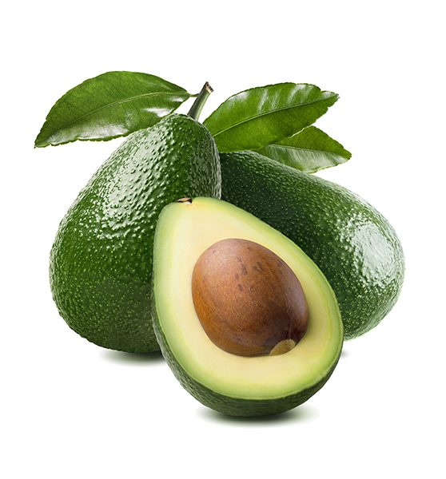
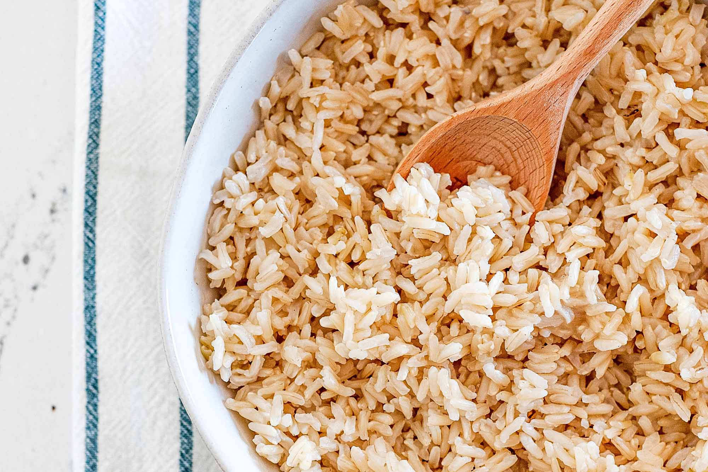

| Име | Текстура | Консистенция | Размер | Форма | Цвят | Снимка |
|---|---|---|---|---|---|---|
| Авокадо | Кремообразна | Мека | 7-10см. | крушовидна, продълговата | тъмно зелен |  |
| Броколи | Листата - меки, стъблата и дръжките - твърди | Хрупкави | 60-90см. | дървовидна | тъмно зелен | |
| Леща | Твърда | Крехка | 0.5см. | заоблена, надута | кафяв,зелен, червен | |
| Сьомга | Мека | Влажна | 0.5-1.5м. | продълговата, странично сплескано тяло | розово-оранжева | |
| Кафяв ориз | твърд | Леко хрупкав | 0.5см | малък, продълговат | светло кафяв |  |